开心果 Need Car · 2024-01-25T14:38:00+08:00 · 微信原文
如标题，使用诊断0x22（Read Data By Identifier service）服务，读个DID（Data Identifier），也能导致MCU（Microcontroller Unit， 微控制器单元）复位？答：没错，MCU就任性地Reset了。本文，分享一个工程案例，让我们一探究竟。
1、问题背景描述
问题背景：车辆发现了某器件功能异常，导致车辆故障，而这个器件异常行为的主要诱因：MCU异常reset。所以，“MCU异常Reset”、“车辆故障”等词汇聚焦在一起时，绝对不是什么好事。
简化问题描述：MCU通过IO（Input/output）Pin脚控制某个执行器，示意如下：
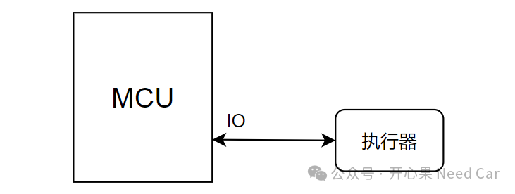
功能需求：在MCU复位过程中，如果复位过程超过2s，执行器IO状态维持2s，之后IO恢复到默认状态（断开）；如果复位过程小于2s，执行器IO状态保持不变。而实际引发问题时，IO状态并没有符合功能需求，即：MCU复位超过2s时，IO没有维持2s原有状态，进而导致车辆故障。如上问题中，有两个点需要理解：
（一）MCU复位，软件跳转过程
我们知道，MCU中，至少包含两个用户程序，用户的Bootloadr程序和用户的Application程序，如下所示：
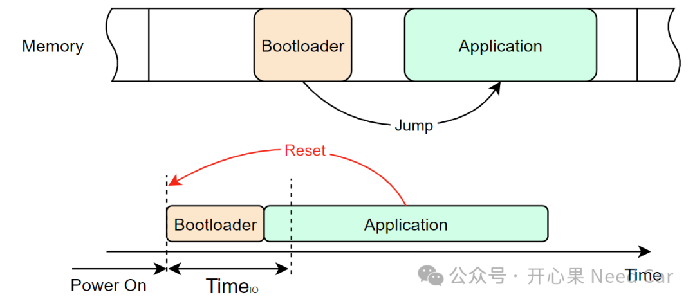
冷启动或者软复位过程中，CPU会先进入Bootloader程序，之后跳转到Application程序；
程序在Application发生异常Reset时，程序会从Application程序跳转进入Trap程序，在Trap程序中，可以执行MCU Reset（eg：调用MCU_PerformReset()接口），程序进入Bootloader程序，如果Application程序可以进入，程序再次跳转到Application；
所以，在程序异常复位（Reset）以后，IO的状态需要在进入Bootloader程序到Application程序初始化（操作IO）之前保持一定状态。假设IO保持时间为TimeIO，如果TimeIO ≤ 2s，则保持IO之前的状态，如果TimeIO＞2s，则IO保持2s之前的状态，之后切换到默认状态（eg：断开）。
（二）MCU异常Reset的因素
假设，MCU在T2时刻发生异常Reset，此时，IO的状态为High；
MCU异常Reset，程序回到Bootloader程序后，IO没有保持之前的状态，IO状态切换成Low；
如果在TimeIO时间内，保持非预期状态，则执行器异常，进而导致车辆故障。
如上描述示意如下：
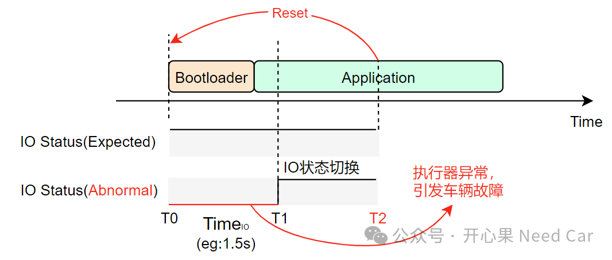
那么，问题来了，什么因素触发的MCU Reset呢？
2、问题根因分析
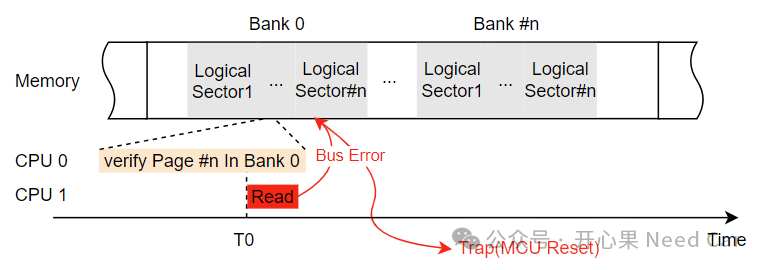
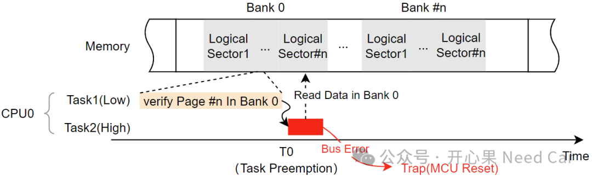
3、问题修复措施
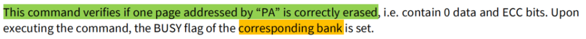
即：为了确保Flash被有效擦除。
修复策略：去除Verify操作。由于Verify操作会使得整个Bank处于Busy状态，影响的范围更大，在不确定影响范围的前提下，避免Verify操作。
4、Trap排查技巧提示
当Trap问题发生时，为了缩小问题的排查范围，可以将对应CPU Trap的Class和TIN（Trap Identification Number）存储在NVM中，以便于问题排查。除此之外，可以将DEADD（Data Error Address Register）寄存器存储的内存地址一并存储，此内存地址可以定位问题发生时，具体对哪个内存地址进行操作。
DEADD寄存器记录问题时，记录问题地址示意如下：
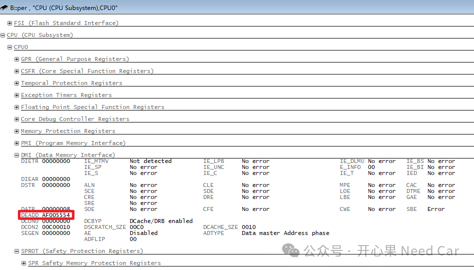
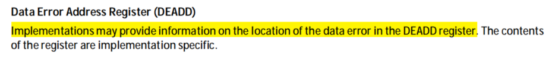
DEADD具体描述如下所示：
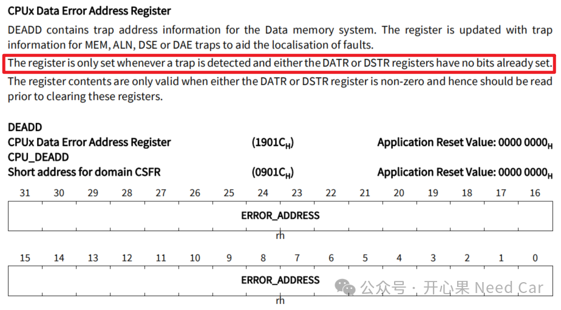
除了DEADD寄存器以外，其他的错误寄存器（Error Information Registers）也可以进行存储，以便于问题排查有更多的数据。eg：DIEAR（Data Integrity Error Address Register）、DIETR（Data Integrity Error Trap Register）、PSTR（CPUx Program Synchronous Trap Register）等。PMI（Program Memory Interface）、DMI（Data Memory Interface）相关错误寄存器如下所示：
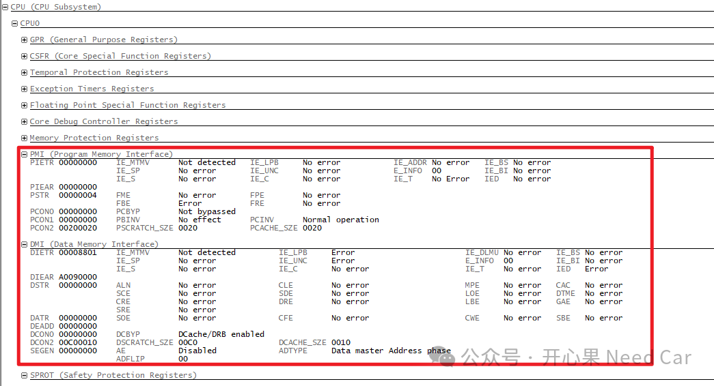
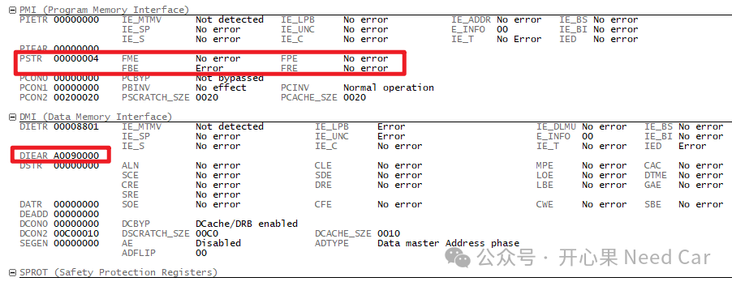
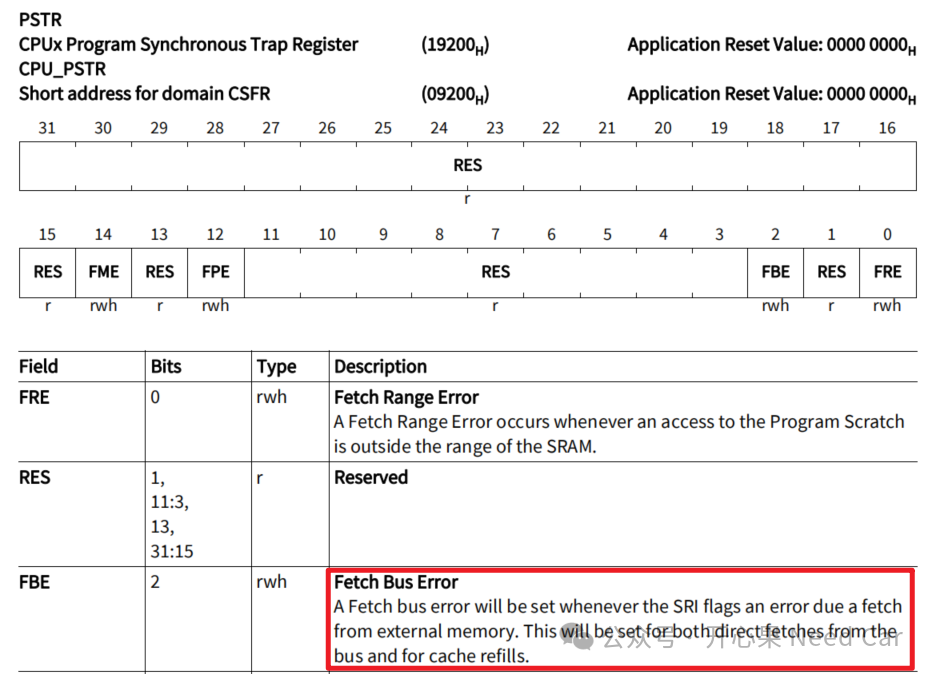
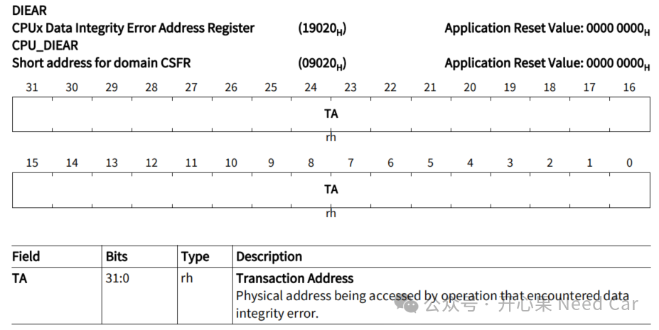
往期精彩回顾
信息安全：ECC（椭圆曲线密码学）验签性能测试
诊断开发：老化（Aging）和愈合（Healing）
Autosar网络管理：网络管理报文CBV(Control Bit Vector)字节详解
Autosar网络管理：Partial Network基础 之 ERA/EIRA、PNC Gateway